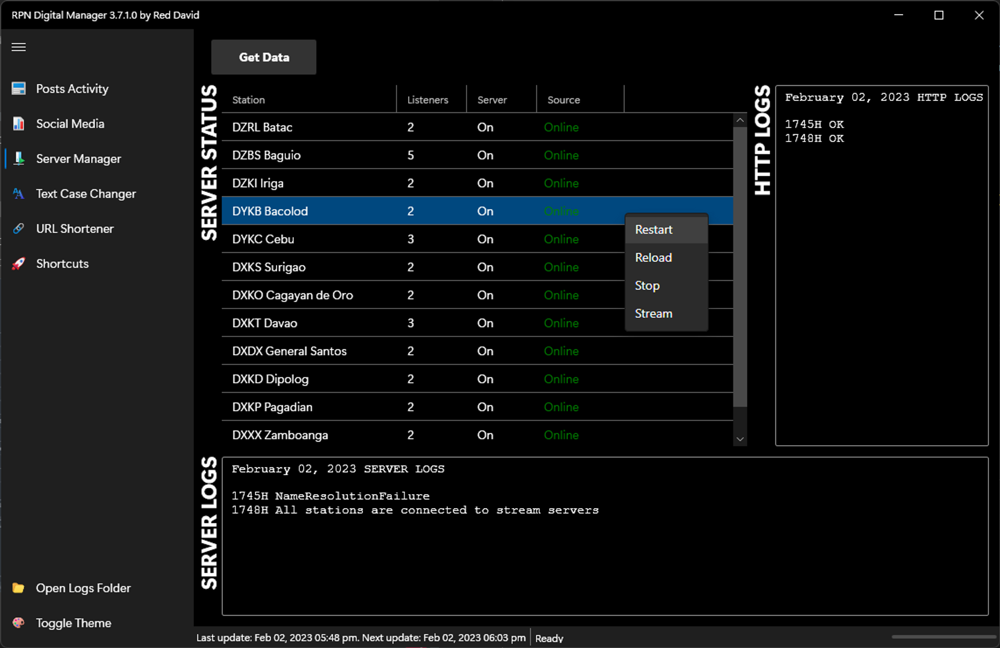

I built a WPF app with a bunch of tools to automate my workflow
As I mentioned in my previous blog post, I do some online broadcasting/content duties which include posting on the website, monitoring and logging 12 stations’ social media and audio servers, and any particular aspect of it.
Having to monitor the 12 stations’ analytics and statistics, one will always come to the point where they would need to automate their workflow. And that’s what I did.
Counting WordPress Posts
First up is to check which stations have posted content on the news website. Since I also have the access to cPanel, thus I can whitelist the office’s IP address in phpMyAdmin to access the MySQL database then.
The app connects to the WordPress database, checks if a station has any existing posts on a specific date, then builds a calendar-like layout, as shown below:
I know a little bit of SQL querying but with how WordPress database works, it took me a while to learn about joining.
I wish I could simplify the query below:
1
2
3
4
5
6
7
8
9
10
"SELECT p.ID, p.post_date, p.post_title, t.term_id "+"FROM wpku_posts p "+"LEFT JOIN wpku_term_relationships rel ON rel.object_id = p.ID "+"LEFT JOIN wpku_term_taxonomy tax ON tax.term_taxonomy_id = rel.term_taxonomy_id "+"LEFT JOIN wpku_terms t ON t.term_id = tax.term_id "+"WHERE p.post_type = 'post' "+"AND p.post_status = 'publish' "+"AND t.term_id NOT LIKE '14' "+"AND (p.post_date LIKE '%"+NOW_YEAR+"%' OR p.post_date LIKE '%"+LAST_YEAR+"%') "+"ORDER BY `p`.`post_date` DESC";
The query will then be created into a PostActivity object which requires the StationName, Month, Day, and Year properties.
The layoutBuilder is a cheeky code I played around to craft a calendar with a check or “x” mark whether a post exists on that date.
The ContentRoot is a StackPanel in XAML and will hold the three new StackPanels created from the code above.
Social Media Numbers
This next one really needs an automation tool. This tool will log the 12 stations’ Facebook Pages, Twitter, and YouTube numbers (likes, followers, and channel subscribers).
Facebook
Too bad I can’t get around an API for Facebook Pages to get the number of likes and followers so I ended up with web scraping, which I posted here.
Twitter
I used Twitter’s API to get the accounts’ number of followers, although there is a step which I still have to get the account’s ID from the username:
stringjsonData;try{varclient=newHttpClient();client.DefaultRequestHeaders.Authorization=newAuthenticationHeaderValue("Bearer",Settings.Default.TwitterBearerToken);varresponse=awaitclient.GetAsync($"https://api.twitter.com/2/users/by/username/{twitterUsername}");varresponseContent=response.Content;/// Convert username (Screen Name) to Twitter Id First/// since the API for getting followers/// requires the Id instead of the usernameusing(vardataReader=newStreamReader(awaitresponseContent.ReadAsStreamAsync())){stringjson=awaitdataReader.ReadToEndAsync();vardata=JsonConvert.DeserializeObject<TwitterData>(json).Data;response=awaitclient.GetAsync($"https://api.twitter.com/2/users/{data.Id}/followers");responseContent=response.Content;using(vardatumReader=newStreamReader(awaitresponseContent.ReadAsStreamAsync())){jsonData=awaitdatumReader.ReadToEndAsync();}if(jsonData.Contains("Too Many")){Debug.WriteLine("API Request too many requests");return"-";}}varfollowers=JsonConvert.DeserializeObject<TwitterDatum>(jsonData).Meta.Result_count;returnfollowers.ToString();}catch(Exceptionex){Debug.WriteLine(ex.Message);return"-";}
I used json2csharp to convert Twitter response to TwitterData object.
YouTube
As for YouTube, we also get to use an API which will require an API key from Google. And I simply scraped off the response to get the number of subscribers instead of using an object.
try{varuri=$"https://www.googleapis.com/youtube/v3/channels?part=statistics&id={channelId}&key={Settings.Default.YouTubeApiKey}";varrequest=(HttpWebRequest)WebRequest.Create(uri);varresponse=(HttpWebResponse)request.GetResponse();varresponseStream=response.GetResponseStream();stringsubscribers;using(varreader=newStreamReader(responseStream)){stringcontent=awaitreader.ReadToEndAsync();subscribers=Regex.Match(content,@"subscriberCount"":.""(\d+)").Groups[1].Value;}// Format to add thousands separatorreturnString.Format("{0:n0}",double.Parse(subscribers));}catch(Exceptionex){Debug.WriteLine(ex.Message);return"-";}
Then the numbers are placed into an object to then be databound and listed into a DataGrid in XAML.
CentovaCast Audio Streams
This third tool lists the stations’ current status of their audio server whether it is off or on, their stream status - online or offline, and current listeners.

Getting the server data using CentovaCast API and cast to an object and can be easily databound to a DataGrid.
Commands: restart, reload, stop. The Stream menu item will navigate to the stream page.
Text Case Changer
We now go back to WordPress content. I sometimes post news content to the website, and some news write-ups don’t follow the standards - like the title in all-caps, in Unicode characters, etc.
Prior to this, I tried writing my own logic but I was not satisfied until I used DevToys code.
Prior to this, my logic includes a list of exception words - which will ignore any case change or follow a certain case - like proper nouns.
There was this Yourls app in cPanel/Softaculous that allows me to create short URLs but it stopped working one day. And WordPress already has one.
This tool should be renamed as URL Styler, which just styles accepted URL input into a custom Viber message - we repost news to our Viber community members.
The Customize button is enabled/disabled through ViewModel if the URL is a vaild rpnradio.com or wp.me shortlink.
Next is we’ll use the HtmlDecode and RegEx capturing to get the details from the link’s page source (e.g. title, featured image URL, and shortlink if the input is not one).
1
2
3
4
5
6
7
...stringpageContent=awaitpage.GetContentAsync();vartitle=HttpUtility.HtmlDecode(Regex.Match(pageContent,@"<title>(.+)</title>").Groups[1].Value.Replace("- Radio Philippines Network",string.Empty).Trim());varshortLink=Regex.Match(pageContent,@"<link rel=""shortlink"" href=""(https\:\/\/wp\.me\/.+)"">").Groups[1].Value;varimagePath=Regex.Match(pageContent,@"og:image"" content=""(.+)""").Groups[1].Value;
The tool will finally create a custom text to the Clipboard and ready to be pasted in Viber.
(WIP) Shortcuts
I used an Elgato Stream Deck before to launch most-used URLs and I am currently working to integrate this to the app.
Unfortunately, the code repo is not publicly available but will try to “hide” some confidential details before making it public.